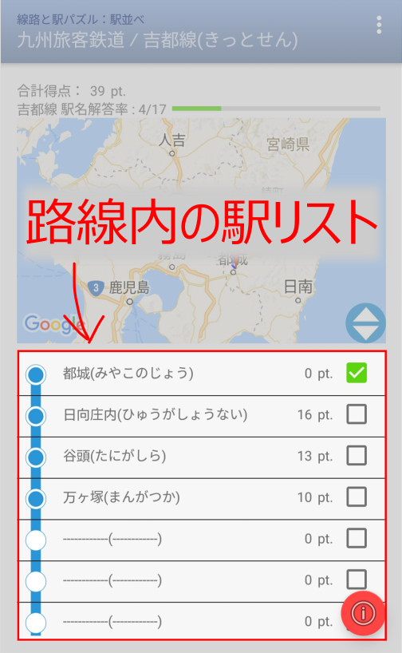

「駅並べ」知ってて当然？
〜アクティビティ起動後はこんな感じ〜
最初の一駅をスタートに、その路線にある駅を選び、正しい順番に並べるクイズです。「路線シルエット」に正解するとプレイできる様になります
画面の説明
ここでは以下の内容を説明する
- 得点と解答進捗
画面の左上にその路線の「駅並べ」の得点と解答率（正解駅数／路線内の全駅数）が表示されます。「地図合わせ」に正解していると路線シルエットを青色で表示します。未正解だと表示されません。
- 線路と駅の位置
正解済みの線路と駅の位置を表す地図が表示されます。
をドラッグして上下にスクロールすると地図のサイズを変更できます。
- 駅のリスト

路線内の駅を表すリストが表示されます。

リストには駅アイコン（ 正解： ／未正解：
／未正解： ）、駅名、得点と地図上のマーカー表示トグルスイッチが表示されます。
）、駅名、得点と地図上のマーカー表示トグルスイッチが表示されます。
遊び方の説明
- 【駅の並べ方】
-
最初は、起点となるターミナル駅だけ表示されています。
未正解（）の駅をタップし、リストから正しい駅名を選びます。
- 正解で
と表示され、リストのアイコンが に変わり、得点が得られます。
- 間違えると
と表示され獲得できる点数が減ります。
- 正解で
- 【地図上の位置表示】
-
正解した駅をチェックすると、地図上に駅の位置がマーキングされ位置を確認できます。
地図上のマーカーをタップすると、その駅をWebで検索できます。
その他の操作
駅別の操作内容
- ちょっとだけ答えをみたい
- 長押しメニューで「回答を見る」を選択。
画面の下の方にちょっとだけ駅名が表示されます。 - この路線をもう一度遊ぶ
- 長押しメニューの「回答をクリア」を選択。
- この駅についてWeb検索
- 長押しメニューで「Webを検索」を選択する
全体共通の操作
- ⓘボタンの表示／非表示を切り替える
- オプションメニューの「ⓘボタンを消す（表示する）」を選択
- 「線路と駅」の説明、免責事項を見る
- オプションメニューの「線路と駅について」を選択する
- 難しさのレベルを変える
- オプションメニューの「レベル設定」を選択する
- 使い方の説明を見る
- オプションメニューの「使い方」を選択する
- ご意見、お問い合わせ
- オプションメニューの「お問い合わせ」からメーラを起動する
Next